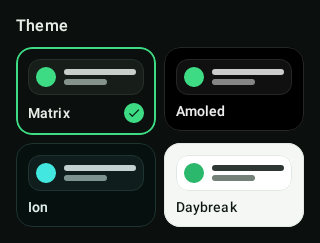
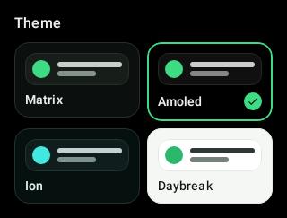
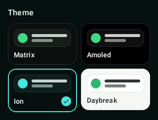
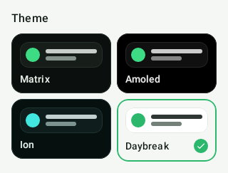

Offline-first mileage, travel & expense tracking, built in Kotlin & Compose Multiplatform.
A standalone app that tracks trips, logs expenses and routes approvals entirely on-device — no backend, no network, no account. One shared codebase targets Android, iOS and Wear OS across a 23-module clean architecture.
Mileway ships a persisted in-app theme picker — pick a look once and it survives restarts. The deep-dark Matrix palette is the default; a true-black AMOLED mode, a cyan accent and a clean light theme round it out, all driven by one Compose Multiplatform theme engine.
Persisted via DataStore · applied app-wide through a single MaterialTheme token set




Recorded on an Android emulator running the offline noGms build — no network, deterministic mock data. These are screen recordings, not mockups.
Each feature is its own Gradle module. They never depend on each other — they meet only at the :app composition root. Tap through them — each links to its source module on GitHub:
Feature modules are isolated; shared concerns live in core:* modules compiled for every platform. The dependency graph only ever points inward.
graph TD
APP[":app — composition root · navigation · Koin graph"]
subgraph Features["11 feature modules — isolated from each other"]
direction LR
FT["tracking"]
FL["logging"]
FM["media"]
FP["profile"]
FA["approvals"]
FPA["payables"]
FTR["travel"]
FC["cards"]
FPM["payments"]
FE["events"]
FAG["agent"]
end
subgraph Core["9 core modules — shared commonMain"]
direction LR
UI["core:ui — design system + theme"]
DATA["core:data — Room KMP + DataStore"]
NET["core:network — contracts (mocked)"]
PLAT["core:platform — expect / actual"]
SEC["core:security — device integrity"]
MAPS["core:maps — maplibre / krossmap"]
end
STUB[":stub — deterministic mock data"]
WEAR[":wear — Wear OS tile"]
APP --> Features
APP --> STUB
APP --> WEAR
Features --> Core
STUB --> DATA
STUB --> NET
No feature module depends on another. Cross-feature wiring happens once, at the :app root — so any feature can be built, tested or deleted in isolation.
UI system, data, contracts, platform services and security live in core:* and compile to commonMain for Android, iOS & Wear.
The :stub module supplies deterministic data behind every repository — which is exactly why the whole app, and its screenshot tests, run with zero network.
A build-logic set of convention plugins + a version catalog keep AGP/Kotlin/Compose config identical across all 23 modules.
flowchart LR
SCN["Composable screen"] -->|Action| VM["ViewModel"]
VM -->|reduce| ST["Immutable ScreenState"]
ST -->|StateFlow| SCN
VM <--> REPO["Repository"]
REPO <--> ROOM[("Room · KMP")]
REPO <--> DS[("DataStore")]
flowchart TD
SRC["Single Kotlin codebase"] --> GMS["gms flavor"]
SRC --> NOGMS["noGms flavor"]
GMS --> PLAY["Google Play · KrossMap maps"]
NOGMS --> FDROID["F-Droid · MapLibre offline tiles"]
GUARD{"dependency-guard"} -.blocks proprietary libs.-> NOGMS
Raw GPS drifts, spikes and stalls. Mileway's tracking core runs every fix through a cleaning pipeline before a single metre is counted — fused with the device's accelerometer, all inside a foreground service, all on-device.
flowchart LR
SIM["Simulated drive source"] -.->|for tests| GPS
GPS["Raw GPS fixes"] --> JIT["Jitter suppression"]
JIT --> SPIKE["Spike detection"]
IMU["IMU / accelerometer"] --> FUSE
SPIKE --> FUSE["Sensor fusion"]
FUSE --> BUCKET["Four-bucket distance accounting"]
BUCKET --> OUT(["Clean distance + quality score"])
Stationary jitter is suppressed and physically-impossible jumps are rejected, so a parked phone never accrues phantom distance.
Accelerometer readings corroborate GPS movement, keeping the trace stable through tunnels, urban canyons and weak-signal stretches.
Distance is bucketed by confidence rather than summed blindly, producing a defensible total plus a per-trip quality score.
A simulated-drive source replays a fixed route, so the entire engine runs — and is unit-tested — without anyone leaving their desk.
All captured deterministically by the Roborazzi screenshot suite — 50 baselines generated on the JVM with no emulator. Click any to enlarge.
Modern, multiplatform, and deliberately backend-free.
Mileway is one piece of a larger body of work. Dig into the code, ask the AI CV about any decision in it, or jump to the rest of the portfolio.
An interactive AI CV — ask it about the architecture, the location engine or any trade-off in this project.
Open AI CV ↗The conventional one-page résumé — experience, scope and stack, downloadable as a PDF.
View résumé ↗The full Kotlin Multiplatform repo — 23 modules, convention plugins, CI and the Roborazzi screenshot suite.
Browse the code ↗Career history, recommendations and the longer story behind the projects.
Connect ↗The rest of Siddharth Pandalai's selected work and writing.
Back to portfolio →Every feature is its own isolated module — tracking, logging, media, approvals, payables, travel, cards, payments, events and more.
See the modules ↗Architecture, location engine, design system, multiplatform build and CI — a complete, original engineering case study. Read the code or ask my AI CV about any decision in it.